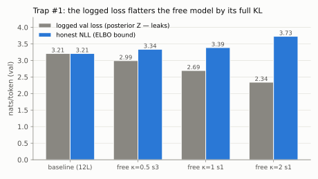
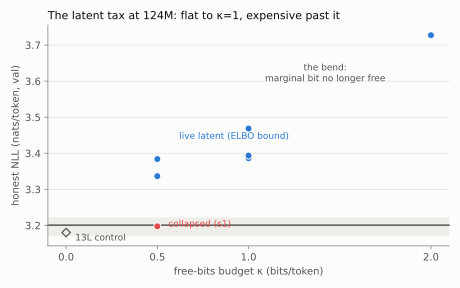
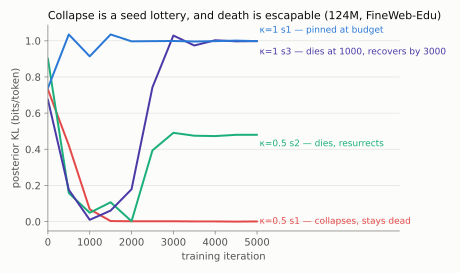

An independent replication of the Free Transformer at 51M–124M parameters, with error bars
Every token an ordinary GPT emits is a fresh roll of the dice; consistency about "who is speaking and where this is going" exists only implicitly, renegotiated at each position. The Free Transformer (Fleuret, arXiv:2510.17558) makes that decision explicit: a one-block non-causal encoder computes a per-token binary latent Z from the mid-depth activations during training; at generation, Z is sampled from a uniform prior and injected into the decoder's keys and values at depth L/2. Trained with a conditional-VAE objective under a free-bits budget κ, the paper reports notable gains on reasoning and code benchmarks at 1.5B and 8B parameters for ~3% overhead.
It is a simple, load-bearing idea from a frontier lab — and, nine months later, we could not find a single public independent replication at any scale. This series is that replication, and this first paper asks the questions a replication must ask before it can ask anything else: what does the architecture actually cost, measured honestly; when does its latent survive training; and which of the obvious comparisons are broken? The judgments here are deliberately confined to language-modeling likelihood; the paper's downstream claims live at scales we approach, not reach, and Paper 2 will probe what the surviving latents encode.
The backbone is a from-scratch pre-norm GPT (RMSNorm, SwiGLU, RoPE, tied embeddings, GPT-2 BPE) identical to the one in our earlier Attention, Controlled study — the 124M configuration matches that study's MHA arm to the parameter (123,587,328). The Free Transformer arm adds, faithfully to the paper: the one-block non-causal encoder whose queries are a learned embedding ζ (position enters only via RoPE); H=16 straight-through Bernoulli bits per token; injection into keys/values only at layer L/2; and the per-token free-bits hinge max(0, KLt − κ). One documented deviation: the paper's "one-hot over 216 with a linear post-sampler" is implemented as a factored linear map on the ±1 bit vector — a literal 216×d table cannot receive straight-through gradients tractably, and the paper's own ~3% overhead figure accounts for the encoder block, not a 268M-parameter table. With the post-sampler zero-initialized, the free model's forward pass is bit-exact to the baseline's at initialization — a unit-tested invariant that pins the injection wiring.
| Scale | Data | Tokens | Arms (seeds) |
|---|---|---|---|
| dev — 51M (8L/512d, 512 ctx) | TinyStories | 131M | baseline (3); free κ∈{⅛,½,1,2,4} (3 each); H∈{4,8,16} (3 each); κ=⅛ ×6 |
| headline — 124M (12L/768d, 1024 ctx) | FineWeb-Edu | 2.46B | baseline (3); 13L params-matched control (1); free κ=½ (3); κ=1 (3); κ=2 (1) |
The 13-layer control matches the free model's parameter count to 0.02% (130.67M vs 130.69M) — the paper never runs this control because at 8B the encoder overhead is negligible; at 124M (+5.7%) it is not.
During training and evaluation the free model's Z comes from the encoder — which reads the entire sequence, including the tokens being predicted. The logged loss is therefore an ELBO-like quantity, flattered by up to the full KL the latent carries. At κ=2 the logged validation loss looks 0.87 nats better than the baseline; honestly accounted, it is 0.52 nats worse. Any comparison made on logged losses — including, we suspect, some future replications' — is broken by construction. The honest quantity is the ELBO bound (posterior CE + KL), which we verified is nearly tight here with a posterior-proposal importance-weighted bound (K=16 tightens it by only ~0.005 nats). A second, subtler trap: the prior-proposal IWAE — the obvious estimator — is useless at realistic budgets, since a sequence carries κ·T bits of latent information and no feasible number of prior samples finds the posterior region.

On honest accounting, at 124M/2.46B tokens the live-latent Free Transformer pays ≈0.19 nats (band 3.34–3.47) against the baseline band (3.17–3.22) — roughly four times our measured seed noise, and far clear of the params-matched control. But the shape of the tax across budgets is the finding:
| κ (bits/tok) | posterior CE | KL | honest NLL | marginal recovery |
|---|---|---|---|---|
| 0 (baseline, 3 seeds) | — | — | 3.171 – 3.222 | — |
| 0.5 (live seeds) | 2.993 / 3.051 | 0.48–0.50 | 3.337 / 3.384 | ~52% of the first half-bit |
| 1 (3 seeds) | 2.694 – 2.777 | 1.00 | 3.386 – 3.469 | 85–99% — nearly free, seed-dependent |
| 2 (1 seed) | 2.342 | 2.00 | 3.727 | ~51% — the bend |

The scale trend makes this more than a curiosity. At 51M on TinyStories, the model recovers ~55% of the KL it spends at κ=1; at 124M on FineWeb-Edu, ~69% on average — and 85–99% at the margin near the optimum. If the recovery rate keeps climbing with scale and data richness, it crosses 100% somewhere below the paper's 1.5B — at which point the latent is free on likelihood, and whatever it buys downstream comes at no cost. This is, we believe, the first quantitative account of why the Free Transformer should need scale, and it reconciles our small-scale tax with the paper's large-scale gains without requiring either result to be wrong.
The paper warns that too large a κ collapses training. We found the opposite boundary more interesting: at small κ the latent's survival is a coin flip. At dev scale with κ=⅛ (n=6 seeds, across two GPU vendors), four runs settle at the budget and two collapse to ~0.005 bits — strictly bimodal, one death per backend, no middle ground. At 124M with κ=0.5 (n=3), every seed's KL crashes toward zero in the first ~1,500 iterations; one never recovers, one recovers early, and one sat dead from iteration 2,000 to 2,400 and then spontaneously resurrected to full budget. The free-bits hinge is one-sided — nothing pushes information back into a dead latent — so whether Z lives is decided by whether reconstruction stumbles onto a use for it before the encoder's gradients vanish. κ=1 survived 3 of 3 seeds — though not unscathed: one crashed to 0.01 bits by iteration 1,000, recovered fully by 3,000, and its final honest NLL carries a ~0.08-nat scar from the dead interval. A larger budget improves the recovery odds; it does not prevent the crash.

Two practical corollaries. First, a single-seed replication of this architecture is uninformative: at κ=0.5 it reports "works" or "collapses" with equal sincerity — our own first 124M seed read as deterministic collapse until seeds 2 and 3 voted otherwise. Second, latent width is slack: H∈{4,8,16} at κ=0.5 are statistically indistinguishable on both the ELBO and the tight bound — every configuration pins its KL at exactly κ. The budget is the only dial.
Midway through this study we reported internally that the params-matched 13L control "beats the collapsed free model, so a dead encoder is worth less than a decoder layer, and depth buys 0.029 nats." Twenty-four hours later, baseline seed 2 landed 0.038 nats from seed 1 — wider than the effect — and seed 3 stretched the band to 0.051; the claim dissolved. We keep the episode in the research log rather than smoothing it over, because it is the cleanest demonstration of the study's methodological point: at 124M and a 2.5B-token budget, seed noise is ~0.05 nats, and any comparison below that line is a coin-read. Dev-scale noise (0.003) had taught us the wrong intuition; noise must be measured at the scale of the claim.
Likelihood is not the paper's headline metric: Fleuret's gains are on prompted downstream benchmarks at 4–60× our compute, where conditioning uses the posterior prefill and a latent that is likelihood-neutral could still change generation usefully. Our token budget (2.46B) is Chinchilla-ish for 124M but a fraction of the paper's; the collapse lottery rates are n=3–6; κ=2's bend rests on one seed; and the recovery-rate extrapolation is two points and a mechanism, not a law. Paper 2 addresses the part likelihood can't see: steering, probing, and generation-quality experiments on the surviving latents.
Everything — code, configs, seeds, the live research log with every decision and both pre-registered predictions — is in the repository. Every run in this paper names its seed, config, and commit; the training loop checkpoints on SIGTERM, so every result survived preemption by the owner needing his GPU back.
python3 -m venv .venv --system-site-packages && .venv/bin/pip install -e ".[dev]"
.venv/bin/python -m pytest tests/ # 12 tests incl. the init-equivalence invariant
.venv/bin/python scripts/prepare_fineweb.py # 9.9B tokens, GPT-2 BPE
.venv/bin/python scripts/train.py configs/ft124m_fineweb.yaml \
--set model.model_type=free model.kappa_bits=1 train.seed=1
.venv/bin/python scripts/eval_prior.py --iwae-k 16 --iwae-posterior # honest NLL
| GPU | 124M throughput | Notes |
|---|---|---|
| RTX 4080 SUPER 16GB | 74k tok/s | batch 12, torch.compile |
| RTX 5060 8GB | 30k tok/s | batch 4 + chunked CE, beside a llama-server |
| Intel Arc Pro B70 32GB | 58k tok/s (51M dev) | torch 2.11+xpu, eager; first documented Arc B-series pretraining. 124M×1024ctx is not yet viable on the XPU stack (dispatch-bound eager; inductor autotune storms) — the full account is its own worklog post. |
Total spend: ≈200 consumer-GPU-hours across three machines, ≈$15 of electricity, zero cloud. The cross-backend anchors agree within seed noise, so none of the findings are vendor-specific.
Paper 2 probes what a surviving latent encodes (bit-level probes, steering by pinning Z, per-Z generation diversity) — the κ=1 checkpoints carry a full bit per token of learned decisions. A 350M extension on a weekend RTX 6000 Pro would add a third point to the recovery curve; if it lands near 85%, the crossover-below-1.5B story sharpens considerably.